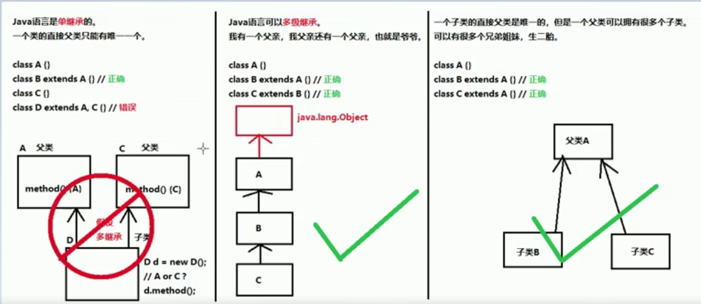
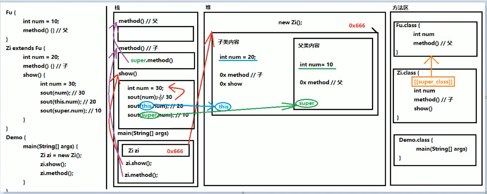

2019-10-23-22:58:23
目录
1.继承
2.区分成员变量重名的方法
3.区分成员方法重名的方法
4.继承中重写与重载的区别
5.继承中覆盖重写的注意事项
6.继承中覆盖重写的设计原则
7.父子类构造方法的特点
8.Super关键字的三种使用方法
9.This关键字的三种用法
10.Super和This关键字图解
继承
继承: 是面向对象软件技术当中的一个概念，与多态、封装共为面向对象的三个基本特征。 继承可以使得子类具有父类的属性和方法或者重新定义、追加属性和方法等。
注意:
1.继承是多态的前提,如果没有继承就没有多态
2.在继承关系中,"子类就是一个父类",也就是说,子类可以被当作父类看待
作用:继承主要解决的问题就是共性抽取
子类特点:
1.子类可以拥有父类的"内容"
2.子类还可以拥有自己专有的内容
Java中继承的三个特点:
1.单继承
2.多级继承
3.多种继承(俗话就是有很多子孙)

继承的格式:
定义父类的格式:(普通类的定义)
public class 父类名称{
语句体
}
定义子类的格式:
public class 子类名称 extends 父类名称{
语句体
}
注意:在父子类继承关系当中,如果成员变量重名,则创建子类对象时,访问有两种方式
1.直接通过子类对象访问成员变量
等号左边是谁,就优先用谁,没有则向上找
2.间接通过成员方法访问成员变量
改方法属于谁,就优先用谁,没有则向上找
package demopra;
public class Fu {
int numFu = 20;
int num = 2;
public void methodFu() {
int num = 200;
System.out.println(num);
}
}package demopra;
public class Zi extends Fu {
int numZi = 10;
int num = 1;
public void methodZi(){
int num = 100;
System.out.println(num);
}
} 1 package demopra;
2
3 public class InheritanceExample {
4 public static void main(String[] args) {
5 //创建一个父类对象
6 Fu fu = new Fu();
7 //只能使用父类的内容,没有任何子类的内容
8 System.out.println(fu.numFu);//20
9 //创建一个子类对象
10 Zi zi = new Zi();
11
12 System.out.println(zi.numFu);//20
13
14 System.out.println(zi.numZi);//10
15 //等号左边是谁,就优先调用谁
16 System.out.println(zi.num);//1
17
18 //这个方法是子类的,如果没有就向上找,绝不会向下找,向上找不到就会报错
19 zi.methodZi();//100
20 //这个是在父类当中定义的
21 zi.methodFu();//200
22
23 }
24 }区分成员变量重名的方法
局部变量:
1.本类的成员变量
2.父类的成员变量
直接写成员变量名:
1.this.成员变量名
2.super.成员变量名
区分成员方法重名的方法
创建的对象时谁,就优先用谁,如果没有则向上找,绝对不会向下找子类的(成员方法和成员变量一样)
package demopra;
public class Fu {
public void method(){
int num = 30;
System.out.println(num);
}
}1 package demopra;
2 public void method(){
3 int num = 3;
4 System.out.println(num);
5 }
6 } 1 package demopra;
2
3 public class InheritanceExample {
4 public static void main(String[] args) {
5 //创建一个子类对象
6 Zi zi = new Zi();
7 //创建的是子类对象,所以优先用子类方法
8 zi.method();//3
9 }
10 }继承中重写与重载的区别
重写(override):在继承关系当中,方法的名称一样,参数列表[也一样],也叫覆盖,覆写
重载(overload):方法的名称一样,参数列表[不一样]
继承中覆盖重写的注意事项
1.必须保证父子类之间方法的名称相同，参数列表也相同,@Override:写在方法前面，用来检测是不是有效的正确覆盖重写，这个注解就算不写，只要满足要求，也是正确的方法覆盖重写。
2.子类方法的返回值必须[小于等于]父类方法的返回值范围。.
小扩展提示:java.Lang.object类是所有类的公共最高父类(祖宗类)，java. lang . String就是object的子类
3.子类方法的权限必须 [大于等于]父类方法的权限修饰符。
小扩展提示:public > protected > (default) > private
备注:(default)不是关键字default. 而是什么都不写,留空。
继承中覆盖重写的设计原则
设计原则:
对于已经投入使用的类，尽量不要进行修改。推荐定义一个新的类，来重复利用其中共性内容，井且添加改动新内容。
父子类构造方法的特点
1.子类构造方法当中有一个默认隐含的“super()"调用，所以一定是先调用的父类构造，后执行的子类构造。
2.子类构造可以通过super关键字来调用父类重载构遣。
3. super的父类构造调用，必须是子类构造方法的第一个语句。不能一个子类构造调用多次super构造。
总结:
子类必须调用父类构造方法，不写则赠送super();写了则用写的指定的super调用，super只能有一个,还必须是第一个。
Super关键字的三种使用方法
1.在子类的成员方法中，访问父类的成员变量。
2.在子类的成员方法中，访问父类的成员方法。
3.在子类的构造方法中，访问父类的构造方法。
1 package demopra;
2
3 public class Zi extends Fu {
4 int numZi = 10;
5 // int num = 1;
6
7 public Zi() {
8 super();
9 }
10
11 public void methodZi(){
12 // int num = 100;
13 System.out.println(super.num);//2父类中的num
14 }
15
16 public void method(){
17 // int num = 3;
18 super.method();//访问父类中的method()
19 System.out.println("子类方法执行啦!!!");
20 }
21 }This关键字的三种用法
1. 在本类的成员方法中，访问本类的成员变量。
2.在本类的成员方法中，访问本类的另一 个成员方法。
3.在本类的构造方法中，访问本类的另一 个构造方法。
在第三种用法当中要注意:
A. this(... )调用也必须是构造方法的第一 个语句，唯一一个。
B. super和this两种构造调用，不能同时使用。
Super和This关键字图解
